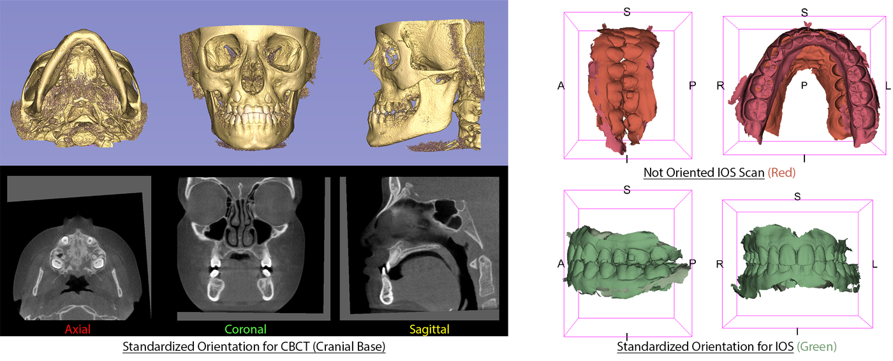

ASO — orient your scans automatically
ASO rotates a scan to bring it into the frame of a reference patient: it does not compare two time points against each other, and it does not segment anything. It handles both a CBCT (a volume) and an intraoral scan (a surface), with two different engines behind a single window.
When to use it
Before most registrations, really. A registration assumes its two inputs already start in a reasonably consistent orientation; without that, it has no correct starting point. AREG_IOS, for instance, looks directly for the transform file that ASO produces to build its own matrix — if your scans have never been oriented by ASO, there is nothing for it to find. Run ASO whenever you are preparing scans for a registration, for superimposing a longitudinal series, or simply to bring a whole cohort into the same frame.
Choosing a mode
You first tell ASO what kind of files you have: CBCT for a volume, IOS for an intraoral scan. For each, two modes are available. Fully-Automated asks only for your raw scans: ASO places the landmarks it needs itself (via a network, for a CBCT) or segments the teeth (for a scan) before orienting. Semi-Automated skips that prediction step and works directly on landmarks or teeth you have already identified — faster, but it assumes that preparatory work already exists.
On a CBCT, the semi-automatic mode needs a transform file that only the automatic mode produces, as part of its recentring step. If you run the semi mode directly on scans that ASO has never processed, it fails patient after patient. In practice, for CBCT, semi-automatic only makes sense as a second pass — for instance to redo the orientation of a series that has already gone through the automatic mode once.

What you need, what you get
To provide
- CBCT: the volume as
.nii.gz(DICOM is accepted but less reliable — prefer.nii.gzwhen you can). In semi-automatic mode, also your own landmarks already placed and the transform file described above - Intraoral scan (IOS): the mesh, in a common format (converted
to
.vtkalong the way). In semi-automatic mode, the 3 or 4 reference teeth to check on the arch; in automatic mode, nothing more — tooth segmentation runs on its own if it hasn't already been done - The reference patient (the "gold"): a dataset downloaded once, which every orientation targets
What comes out
- The reoriented scan — always
.nii.gzfor a CBCT regardless of the input format,.vtkfor an intraoral scan - A transform file, which downstream registration modules (AREG_IOS chief among them) look for automatically
- The landmarks or reference teeth, reoriented as well
Step by step
- Download the reference patient and the models. A one-time step: this is the target every one of your scans will orient itself to.
- Choose the data type and the mode. CBCT or IOS, then Fully-Automated or Semi-Automated depending on what you already have on hand.
- Point to the input folder. ASO processes the whole folder in one run.
- For an intraoral scan in semi-automatic mode, check the reference teeth (3 or 4) that the orientation will line up on. For a CBCT in semi-automatic mode, make sure your landmarks cover at least 4 points shared with the gold: the interface accepts 3 checked, but orientation fails below 4.
- Check "occlusion" if you have both arches. One arch then drives the orientation, and the same rotation is applied to the other to keep the bite relationship intact.
- Set an output folder, then run.
If something goes wrong
In semi-automatic mode, ASO starts by merging every landmark file it finds in your
input folder into a single file — then deletes the originals. Keep a
copy of your .mrk.json files elsewhere before running a job, especially if
the input folder is also where you keep your only copy of those landmarks.
Occlusion mode pairs the upper and lower arches by file name
(Upper/_U_ or Lower/_L_). A file
whose name carries none of these markers is silently treated as a lower arch — with no
error message. Check your file names before turning this option on.
If an output file already exists under the expected name, ASO does not rewrite it and still reports success. After fixing a setting, point to an empty output folder rather than rerunning on the same one.
And after
A scan oriented by ASO is not guaranteed to be anatomically perfect: the orientation is a geometric estimate, not ground truth. Open the result in Slicer and compare it visually against the reference patient before feeding it into a registration. That downstream use is exactly why the transform file is produced: the next modules use it to rebuild the full matrix, from the raw scan through to the registered result.
Further reading
On ASO itself
- Anchling et al., LNCS 14242, 2023 — Automated Orientation and Registration of Cone-Beam Computed Tomography Scans. The ASO/AREG family paper: how the automatic orientation is obtained, and how far it departs from a manual one. free full text.
Around the method
- Ruellas et al., AJODO 2016 — Common 3-dimensional coordinate system for assessment of directional changes. The coordinate system the automatic orientation aims to reproduce. It is what defines “correctly oriented”.
- Gillot et al., Orthod Craniofac Res 2023 — Automatic landmark identification in cone-beam computed tomography. The landmarks ASO orients itself on come from here.
The tool's full bibliography — what was found, and what was looked for without success — is in its sources.
How it actually works → The Atlas page: the geometric principle shared by both backends, what a network predicts versus what is computed, and the pitfalls found in the code.